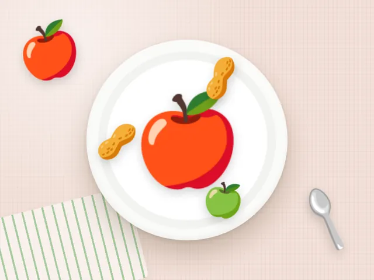

Яблоко с арахисовой пастой
Ккал
166
Белки
4 г
Жиры
8 г
Углеводы
24 г
Состав на порцию
- Яблоко — 150 г
- Арахисовая паста — 15 г
Как приготовить
- Нарежьте яблоко дольками.
- Обмакивайте в арахисовую пасту.
Калорийность и БЖУ посчитаны по составу на одну порцию. Хотите вписать яблоко с арахисовой пастой в свой рацион? Посчитайте норму в калькуляторе калорий.